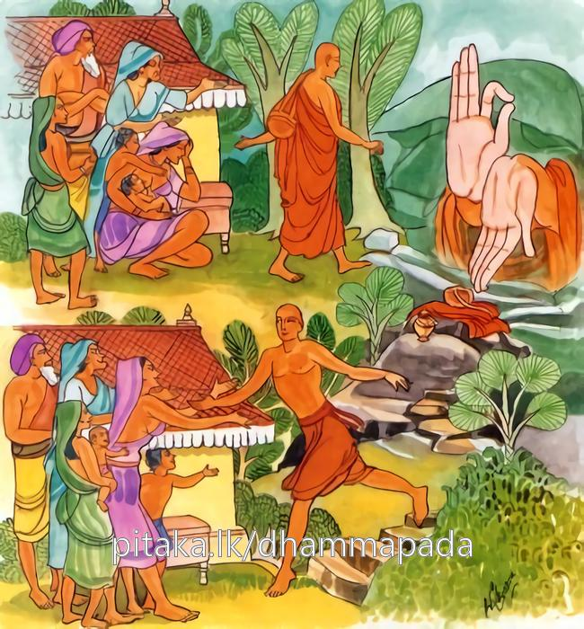

24-3 සිවුරු හළ මහණෙක්
මෙම කතාව ධම්මපද අටුවාවෙන් ද කියවන්න.
යො නිබ්බනථො වනාධිමුත්තො වනමුත්තො වනමෙව ධාවති
තං පුග්ගලමෙථ පස්සථ මුත්තො බන්ධනමෙව ධාවති.
යමෙක් තෘෂ්ණා රහිත වූයේ, තපෝවනයෙහි (දිව්යවිහාරයෙහි) ඇලුනේ, තෘෂ්ණාවනයෙන් (ගිහිබැම්මෙන්) මිදුනේ, නැවැත ගිහිබැම්මට ම දිවේ ද, එවු, ඒ පුද්ගලයා මෙසේ ව්යසනයට පැමිණියහු බලවු.

මහාකාශ්යප මහාස්ථවිරයන් වහන්සේගේ සද්ධිවිහාරික භික්ෂු නමක් සිවු දැහැන් උපදවා ගෙණ සිටියේ ද, තම මාමණ්ඩිය වූ රන්කරුගේ ගෙයි විසූ රන්කරු කෙල්ලක දැක ඇය කෙරෙහි පිළිබඳ සිත් ඇති ව සිවුරු හැර දමා එහි ගියේ ය. මිනිස්සු, අලස ව වැඩපල කිරීමට නො කැමැති නිකමට කා බී සිටි මේ හීරලු ගෙයින් පන්නා දැමූහ. ඉන් පසු පවිටු මිතුරන් හා එක් වූ ඔහු සොරකම් කරමින් මංපහරමින් දිවි යැවී ය. දවසක් සොරකම් කොට රාජපුරුෂයන් අතට හසු වූ මොහු, රාජපුරුෂයෝ අත්පිටි හයා දැඩි ව බැඳ සිවුමංහන්දි ගානේ ගෙණ යමින් කකසවලින් තළමින් වධස්ථානයට ගෙණ ගියහ.
එ දවස මහාකාශ්යප මහාස්ථවිරයන් වහන්සේ පිඩු සිඟා වඩනා සේක් දැඩි ව බැඳ දකුණු දොරින් බැහැරට ගෙණ යන ඒ හීරලු දැක ඔහු කෙරෙහි අනුකම්පායෙන් එහි මදක් නතර ව සිට බැමි බුරුල් කරවා “තා විසින් පෙර පුරුදු කරණලද කමටහන දැන් නැවැතත් සිහි කරව”යි අවවාද කළ සේක. ඔහු ද උන්වහන්සේගේ අවවාදයට නතු ව සිහි උපදවා එහිදී ද චතුර්ත්ථද්ධ්යානය උපදවා ගත්තේ ය. රාජපුරුෂයෝ ඒ අතර ඔහු ගෙණ එල්ලුම්ගසට නංවා ගෙළ මළපුඩු දැමූහ. එහෙත් ඔහුට එයින් බියෙක් තැතිගැන්මෙක් නො වී ය. එහි සිවු පස්හි රැස් ව හුන් නොයෙක් දෙනා ඔහු වෙතට කඩු අඩයටි තෝමර ආදී වූ නොයෙක් පන්නයේ ආයුධ දමා ගැසූහ. එහෙත් ඒ කිසිවකින් තැති නො ගත් ඔහු දැක “බලවු, මේ මිනිහා, සිය ගණන් නොයෙක් මාදිලියේ අවි ගත් මේ මිනිසුන් මැද නො බිය ව සිටින, නො සැලී සිටින, මේ නම් මහා පුදුමයෙකැ”යි මහහඬ නගා කියමින් රජු වෙත ගොස් එ පුවත දන්වා සිටියහ. රජ තෙමේ එය අසා “ඔහු වහා මුදා හරිවු”යි නියම කෙළේ ය. බුදුරජානන් වහන්සේ වෙතට ද ගොස් මෙය සැල කලහ. උන් වහන්සේ ආලෝකයක් පතුරුවා ඔහුට දහම් දෙසන සේක් මේ ධර්මදේශනාව කළ සේක.
යො නිබ්බන්ථො වනාධිමුත්තො වනමුත්තො වනමෙව ධාවති,
තං පුග්ගමෙථ පස්සථ මුත්තො බන්ධනමෙව ධාවතීති.
යමෙක් වන රහිත වූයේ වනයෙහි ඇලුනේ වනයෙන් මිදුනේ නැවැත වනයට ම දුවා ද, මිදුනේ බන්ධනයට ම දුවා ද එවු, ඒ පුද්ගලයා බලවු.
යො නිබ්බන්තො වනාධිමුත්තො වනමුත්තො වනංඑව ධාවති = යමෙක් වනරහිත වයේ වනයෙහි ඇලුනේ වනයෙන් මිදුනේ ඒ වනයට ම දුවා ද.
ගිහිබැව්හි අලාය යි කියූ වනථය, ගිහිගෙය හැර දමා පැවිදි වූ දිව්යවිහාරසඞ්ඛ්යාත තපොවනයෙහි ඇලුනා වූ යමෙක් ගෘශවාසබන්ධනසඞ්ඛ්යාතතෘෂ්ණාවනයෙන් මිදී සිට නැවැතත් ඒ තෘෂ්ණා වනයට ම දුවා ද සිවුරු හැර යේ ද.
තං පුග්ගලං එථ, පස්සථ මුත්තො බන්ධනං එව ධාවති = ගිහි බැඳුමෙන් මිදුනේ ඒ බැඳුමට ම දුවා ද, එවු, විපතට වැටුනු ඒ පුද්ගලයා බලවු.
නිබ්බනථ නම්: ගිහිකම්හි ආලය හැර දමා පැවිදි වූයේ ය. වන වැද සමාපත්තීන්ට සම වැද විසීමෙහි ඇලුනේ වනාධිමුත්ත ය. තෘෂ්ණායෙන් මිදී සිටියේ වනමුත්ත ය. මෙහි වන නම්: ගෘශවාසබන්ධනසඞ්ඛ්යාත තෘෂ්ණා යි. [1]
පුග්ගල, යනු පුරුෂ - සත්ත්ව යන අරුත් ඇතියේ ය. බන්ධන නම්: මෙහි ගිහිගෙයි බැඳීම ය.
මේ ධර්මදේශනාව අසා හෙතෙමේ රාජපුරුෂයන් මැද එල්ලුම් ගස අග හුන්න් ම උදය - ව්යය සිහි කොට තිලකුණු නගා සංස්කාරයන් සම්මර්ශනය කරණුයේ සෝවන්පලයට පැමිණ සමවත් සුව විඳිනුයේ අහසට නැග අහසින්ම බුදුරජුන් වෙත ගොස් වැඳ රජුන් සහිත පිරිස මැද දී ම රහත්බවට පැමිණියේ ය.
විබ්හන්තක භික්ෂු වස්තුව නිමි.
-
20-8 ‘වනං ඡින්දථ’ යනු බලනු. ↑